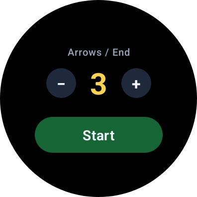
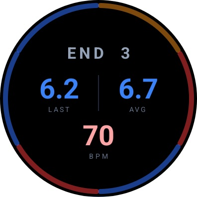
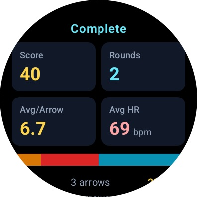
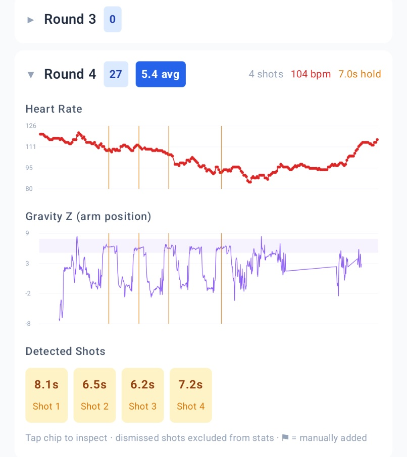
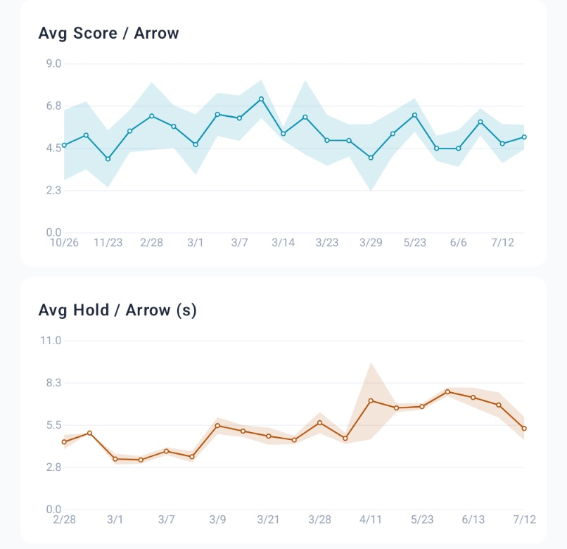
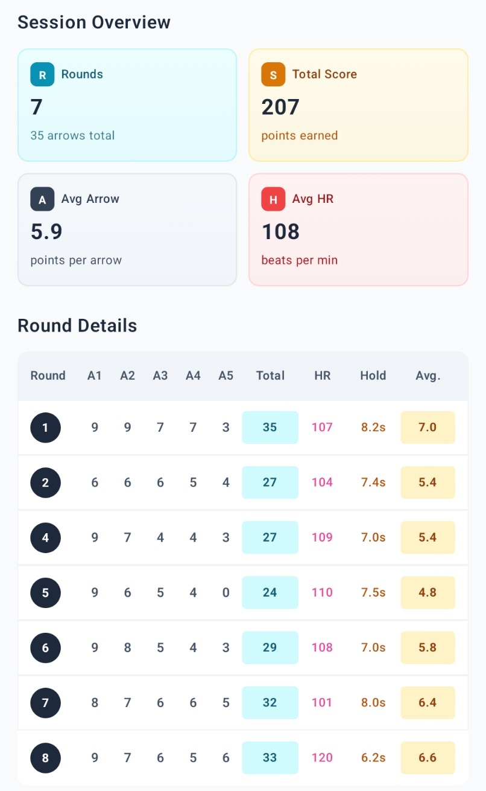
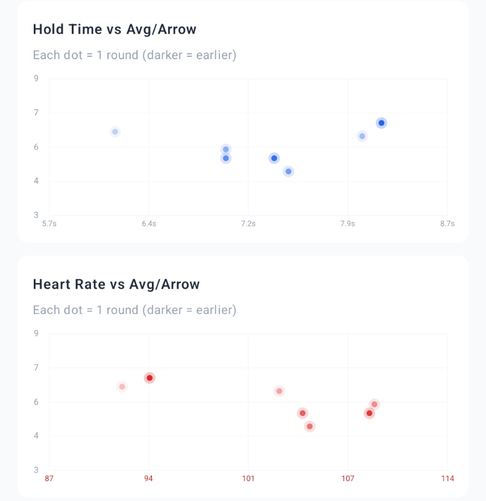

Kotlin · Jetpack Compose · Wear OS
ArrowWatch ↗
A Wear OS watch app and Android phone app I built to track my archery. I score arrows from my wrist at the range, and while I shoot, the watch records motion and heart rate. The phone app then finds each shot in the sensor data, so I can see how steady my draw was and how my heart rate moved alongside my scores.
On the watch
Start a session, choose arrows per round, and shoot. After each round, tap each arrow's ring color (gold, red, blue, black, white, or miss) or enter an exact total. The whole time, the watch logs orientation, gravity, steps, and heart rate. It streams each shot and score to the phone as they happen.



Finding shots in the sensor data
The analytics come from the raw sensor log. To find shots, the app removes slow drift from the arm-angle signal with a 60-second rolling median. Then it looks for stretches where the arm holds unusually still, which marks a draw-and-hold, and merges and filters those stretches into individual shots. Steps show when I walk downrange to pull arrows, and those walks split the session into rounds.

What the phone shows
A live scoring view during the session, then a history of every session with its ring-color breakdown and per-round scores. Each round opens into sensor charts: hold time, arm stability during the hold, and heart rate at each shot, plotted against my average score per arrow.



Why I built it
I wanted to know whether my good rounds and bad rounds looked different in ways I couldn't feel. It's the same loop I run at work (instrument, clean, model, and look for signal), just with arrows.